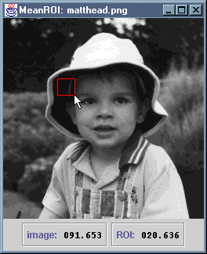

The MeanROI application displays an image and allows the
user to draw a rectangular region of interest on it. The mean grey level
within this region is displayed beneath the image, along with the mean for
the entire image.
The application consists of source files MeanROI.java and
MeanInfo.java. The latter is a class representing the
information panel displayed below the image. Corresponding
.class files are provided, and these class files have been
packaged as a single JAR file, MeanROI.jar.
To install this application, copy the JAR file somewhere, then copy
either the MS-DOS batch file MeanROI.bat or the
bash shell script MeanROI.sh to an appropriate
location and edit it to reflect the new location of the JAR file.